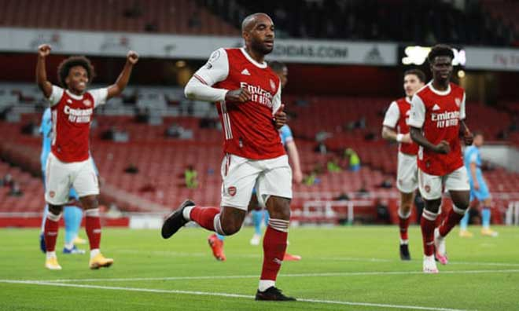
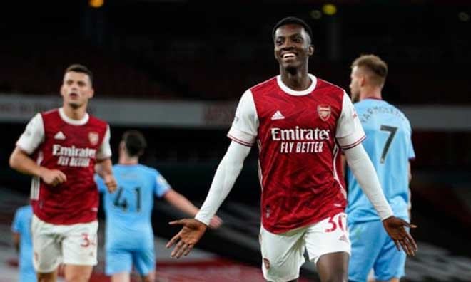

Video highlight trận Arsenal - West Ham: Ông lớn bị áp đảo, người hùng dự bị
HLV Mikel Arteta quyết định trao cho Bukayo Saka vị trí chạy cánh trái để cùng Willian yểm trợ cho Aubameyang & Lacazette, trong khi Kolasinac đá thay Tierney sau khi Tierney bị đau trong lúc khởi động. Bên phía West Ham, David Moyes tiếp tục tin cậy Michail Antonio ở vị trí đá cắm và ông vẫn giữ Fornals trong đội hình xuất phát dù phong độ không tốt ở vòng 1.
Arsenal khởi đầu lấn lướt hơn nhưng West Ham tỏ ra khá chắc chắn trong phòng ngự. Sau hơn 20 phút không có cơ hội quá rõ ràng, Arsenal mở tỷ số trước ở phút 25 nhờ một pha phá bẫy việt vị băng xuống của Aubameyang bên cánh trái, cú bấm bóng của anh được Lacazette ở trong tận dụng với cú đánh đầu. 5 phút sau Arsenal suýt có bàn thứ hai nhưng Saka sút vọt xà.
Nhưng West Ham tìm được bàn gỡ hòa ở phút 45 khi họ tổ chức phản công và Antonio vượt qua Holding để băng vào đệm cận thành quả căng ngang của Fredericks. Sau giờ nghỉ, West Ham bắt đầu vô hiệu hóa các tiền đạo Arsenal nhưng Antonio có một cú đệm trúng lưng Gabriel trên vạch vôi cầu môn đội chủ nhà và sau đó đánh đầu đập xà ngang.
Nhận thấy vấn đề, HLV Arteta rút Lacazette để đưa Nketiah vào sân. Arsenal tiếp tục hút chết ở phút 84 khi dự bị Yarmolenko của West Ham suýt nữa đánh đầu cận thành, nhưng chỉ 1 phút sau Nketiah đã tỏa sáng. Saka có một cú chọc khe đưa Ceballos phá bẫy việt vị thoát xuống, và tiền vệ người TBN căng ngang cho Nketiah sút vào lưới trống trong lúc Arteta đang chờ rút anh ra khỏi sân.
Nketiah mang lại bàn thắng quyết định chiến thắng cho Arsenal Arteta lập tức đổi ý và đưa David Luiz vào sân tăng cường hàng phòng ngự. Mặc dù bỏ lỡ vài cơ hội thuận lợi nhưng Arsenal rốt cuộc vẫn thắng 2-1, vừa đủ để bằng hiệu số của Everton nhưng họ vẫn đứng nhì do Everton ghi nhiều hơn 1 bàn.
Tỷ số trận đấu: Arsenal 2-1 West Ham (hiệp 1: 1-1)
Ghi bàn:
- Arsenal: Lacazette 25', Nketiah 85'
- West Ham: Antonio 45'
Đội hình xuất phát:
Arsenal: Leno, Holding, Gabriel, Kolasinac, Bellerin, Ceballos, Xhaka, Saka, Willian, Lacazette, Aubameyang.
West Ham: Fabianski, Fredericks, Diop, Ogbonna, Cresswell, Soucek, Rice, Bowen, Fornals, Masuaku, Antonio.
Video highlight trận Arsenal - West Ham: Ông lớn bị áp đảo, người hùng dự bị - 4 ArsenalWest Ham Video highlight trận Arsenal - West Ham: Ông lớn bị áp đảo, người hùng dự bị - 5 Sút khung thành 7(3) 14(3) Thời gian kiểm soát bóng 63% 37% Phạm lỗi 11 13 Thẻ vàng 0 1 Thẻ đỏ 0 0 Việt vị 5 2 Phạt góc 7 5 Cứu thua 2 1 Arsenal Video highlight trận Arsenal - West Ham: Ông lớn bị áp đảo, người hùng dự bị - 6vsVideo highlight trận Arsenal - West Ham: Ông lớn bị áp đảo, người hùng dự bị - 7 West Ham